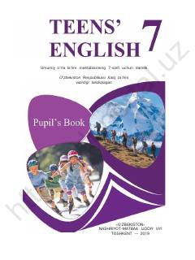

IT7-sinf o‘quvchilari uchun ingliz tili fani darsligi.
Mazkur darslik umumiy o‘rta ta'lim maktablarining 7-sinf o‘quvchilari uchun mo‘ljallangan bo‘lib, ingliz tilini boshlang‘ich va o‘rta bosqichda o‘rganish, so‘z boyligini oshirish hamda grammatik qoidalarni o‘zlashtirishga yordam beradi. Kitob tinglab tushunish, gapirish va o‘qish ko‘nikmalarini rivojlantiruvchi qiziqarli mashq va matnlarni o‘z ichiga oladi.